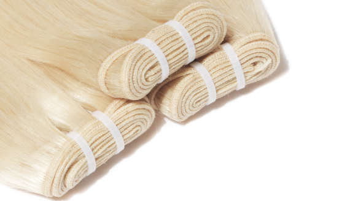

“It quickly gives my hair glorious look while being 100% irritation-free”, that’s what our clients say about Elizé wefted hair extensions. Indeed, thanks to delicate integration mechanism Russian hair wefts do literally no damage to your own hair, so they are applicable even to the finest and easily hurt hair.
A combination of classic handmade wefting techniques and specialised weft sewing machines results in firm tie. This means our weft extensions stay solid and do not fall to pieces or get loose when split to tresses or attached. And thanks to extremely delicate dying and colouring we use here at Elizé, the wefts retain inherent look and quality much longer than you would expect from a hair extension. The result? You enjoy fabulous look of your perfect hairstyle 2-3 months longer. Great, isn’t it?
What’s best about these Russian weft hair extensions is non-damaging application that takes merely 30-60 minutes. Coupled with competitive price, Elizé wefts are definitely an option if you aim to superior look with minimum extra money.
Experience the magic of true Russian hair now! Order your weft extension at Elizé.